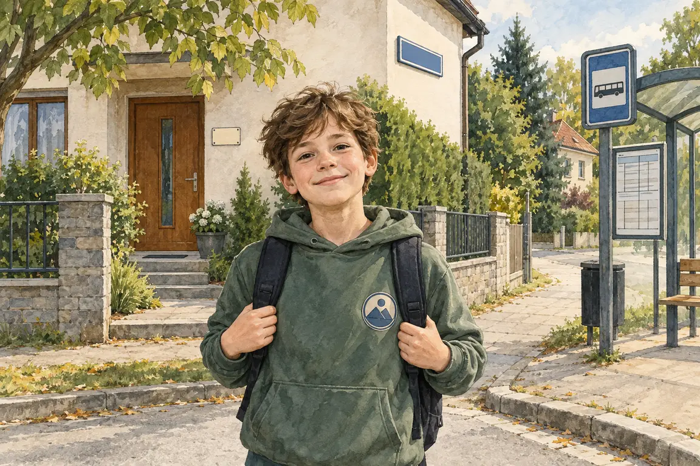

Osobní údaj
Informace, podle které lze poznat konkrétního člověka: jméno s adresou, telefon, škola, fotka obličeje, číslo dokladu.
Pro 6.–7. ročník: co o tobě prozradí internet, ochrana soukromí a kyberšikana.
Všechno, co na internetu zveřejníš, okomentuješ nebo vyhledáš, po sobě zanechá digitální stopu. Stopa zůstává dlouho: smazaný příspěvek mohl mezitím někdo uložit jako snímek obrazovky. Proto je lepší přemýšlet před zveřejněním, ne až potom.
Informace, podle které lze poznat konkrétního člověka: jméno s adresou, telefon, škola, fotka obličeje, číslo dokladu.
Jeden příspěvek nic neřekne, ale víc dohromady ano: škola na mikině + zastávka + čas = kde a kdy tě lze potkat.
Fotku nebo zprávu někoho jiného zveřejníš jen s jeho svolením. Heslo nesdílíš s nikým, ani s kamarádem.
Opakované ubližování přes internet nebo mobil. Neodpovídej, ulož důkazy (snímky obrazovky) a řekni to dospělému.
Jak poznám rizikový příspěvek? Zeptám se: co z něj vyčte cizí člověk – kde bydlím, kde a kdy mě najde, že doma nikdo není, nebo odpovědi na bezpečnostní otázky (jméno mazlíčka, datum narození)? Častá chyba je myslet si, že to vidí jen kamarádi – u veřejného profilu to vidí kdokoli.
Příspěvek na veřejném profilu: „Každé úterý po tréninku v 17:30 jdu sám domů parkem za sportovní halou 🏀“. Co o tobě prozradí?
Příspěvek prozradí tvůj denní režim. Takové údaje veřejně nesdílej.

Najdi čtyři stopy, které by bylo lepší před zveřejněním skrýt.
Digitální stopa je vše, co po sobě na internetu zanecháš – příspěvky, fotky, komentáře i to, co jsi jen vyhledával. Smazaný příspěvek může dál existovat ve screenshotech. Pravidlo: nezveřejňuj nic, co bys nechtěl ukázat rodičům i učiteli.